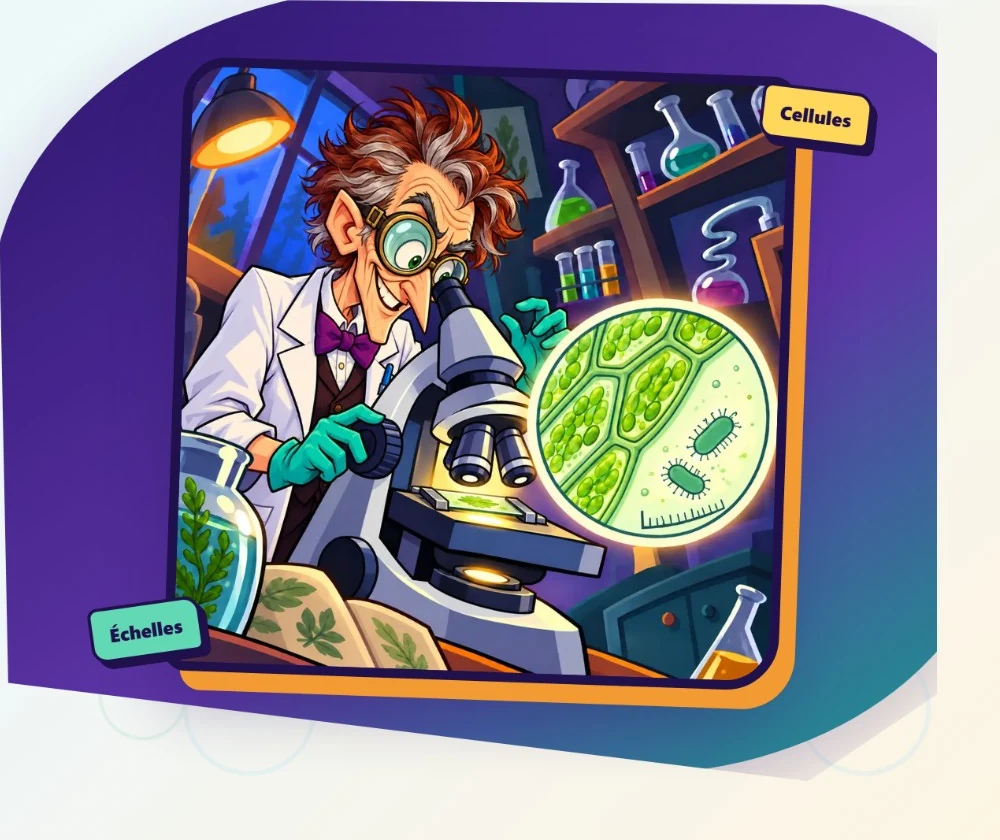

Observe. Mesure. Calcule.
Quinze missions pour comparer cellules végétales, cellules animales et bactéries.
Puis maîtriser l’estimation et le calcul d’une taille réelle.
15 missions2 mesures interactives≈ 20 min

🔬
Mission accomplie
Expert du microscope
0/ 500 points